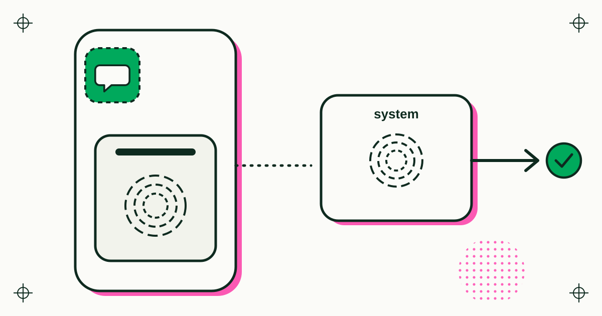

Fingerprint and face prompts inside an app copy: why they did not show and what changed

Since version 0.1.32, an app in a Duo Clone copy can show Android's fingerprint and face prompt, which never appeared before because Android checks the biometric permission against a user ID and a package name, and a copy's package does not belong to Duo Clone's user ID. Duo Clone now makes these requests under its own identity. The sensor, the prompt and the match stay with the system, and the app still receives only the result.
This note explains how an app asks for a fingerprint or face, why that request failed inside a copy, what the fix changes and what it leaves alone, and where passwords and passkeys stand in a copy.
How does an app ask for a fingerprint or face?
An app calls BiometricPrompt, the system shows its own dialog, and the app gets back a success, a failure or an error. Android's biometric guide describes the dialog as system-provided and "consistent across the apps that use it". The app never draws the prompt and never touches the sensor. It supplies a title and a callback, and the callback receives an authentication result.
To use biometrics at all, the app declares the USE_BIOMETRIC permission, which Android's reference lists as a normal permission, added in API level 28. A normal permission is granted at install time, with no prompt to the user.
Why did the prompt never appear in a copy?
Android's biometric service checks that the calling app holds USE_BIOMETRIC by looking at the caller's user ID and package name together, and in a copy those two do not belong to each other. A copy runs inside Duo Clone, so it has Duo Clone's user ID, as the note on how app copies stay separate explains. The request, however, names the copied app's package, and that package is not installed under Duo Clone's user ID. Android rejects the pair with an error, and the prompt is never shown, so fingerprint sign-in looks broken even though the sensor works.
What did Duo Clone change in 0.1.32?
Duo Clone 0.1.32 sends the biometric request of a copy in a form the check accepts; the sensor, the prompt and the match stay with the system. The user ID and the package name now belong together, so the check passes and the system shows its normal dialog. The changelog states the result: "Fingerprint and face prompts now work inside copies of apps that use them. Before, the prompt never appeared in a copy."
The fix covers fingerprint prompts and face prompts alike.
What stays with the system?
A copy gets the same thing a normal install gets, the result of the check, and not the fingerprint or face data behind it. For the stronger biometric classes, Android's biometric security documentation requires that raw biometric data and its derivatives, such as templates, "are never accessible from outside the secure isolated environment", such as the TEE or a Secure Element. The app receives the outcome, success or not, and nothing about the finger or the face.
Two practical points follow. A copy uses the fingerprints and faces enrolled on the phone, so there is nothing to enrol again. And the biometric prompt is separate from Private Space, where Duo Clone's own lock hides copies behind a fingerprint or a PIN.
What about saved passwords and passkeys?
A password that an app offers to save in a copy is kept for that copy only, and passkeys do not work in copies. Both changes came in 0.1.33, in the area next to biometric sign-in.
- Saved passwords. When an app in a copy saves a login, Duo Clone keeps it encrypted in that copy's own data. When the app asks for a login later, Duo Clone shows the prompt Sign in with a saved login? with the saved accounts. The entries live and die with the copy: Clear data and Delete remove them. They are not synced to a Google account.
- Passkeys. Duo Clone answers a passkey request as unsupported, so the app can offer another way to sign in, and shows the notice Passkeys don't work in clones. Use another way to sign in. when you start one.
Clearing the credential state also reports success now, so an app that waits for that answer no longer hangs when you log out.
Where are the limits?
The fix makes the system prompt available. It does not decide whether an app accepts a copy. Apps that ask not to run in a virtual space, using the manifest property in the REQUIRE_SECURE_ENV note, are still refused, and many banking and wallet apps are in that group. An app can also run its own checks on the device, and a copy may not pass them.
What should other developers take from this?
If your app fails biometric sign-in only inside a container, look at the permission check before the sensor: the check works on a user ID and a package name, and a host that gets them wrong makes a working sensor look broken. Whatever the cause, keep a fallback sign-in, because a prompt can be unavailable for reasons the app does not control.
Sources
- Duo Clone changelog, version 0.1.32 (21 November 2026) and version 0.1.33: fingerprint and face prompts, saved passwords, passkeys.
- Android Developers, Show a biometric authentication dialog: the system dialog and the authentication callback (last updated 12 October 2026, read 27 November 2026).
- Android Developers, Manifest.permission:
USE_BIOMETRIC, added in API level 28, protection level normal (read 27 November 2026). - Android Open Source Project, Biometric security: biometric data and templates stay in the secure environment (last updated 30 September 2026, read 27 November 2026).